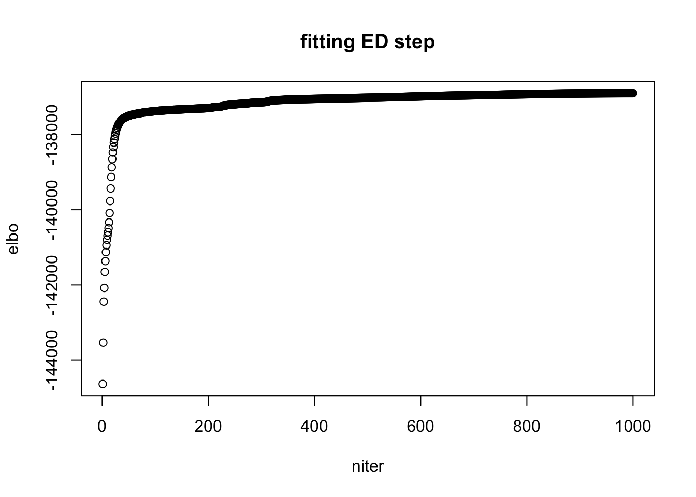
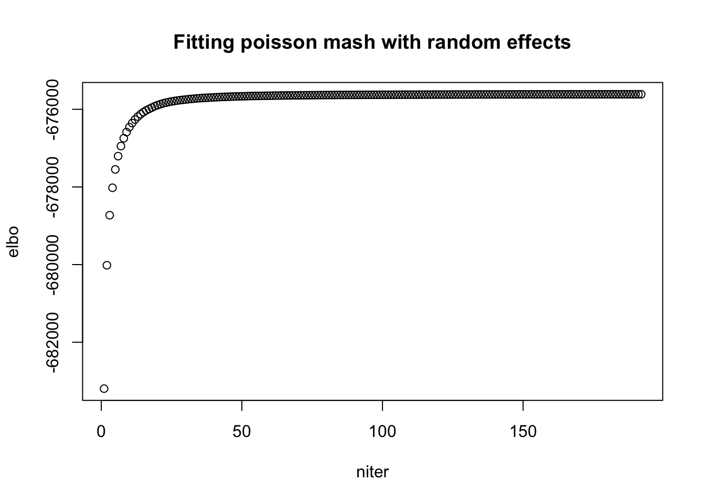
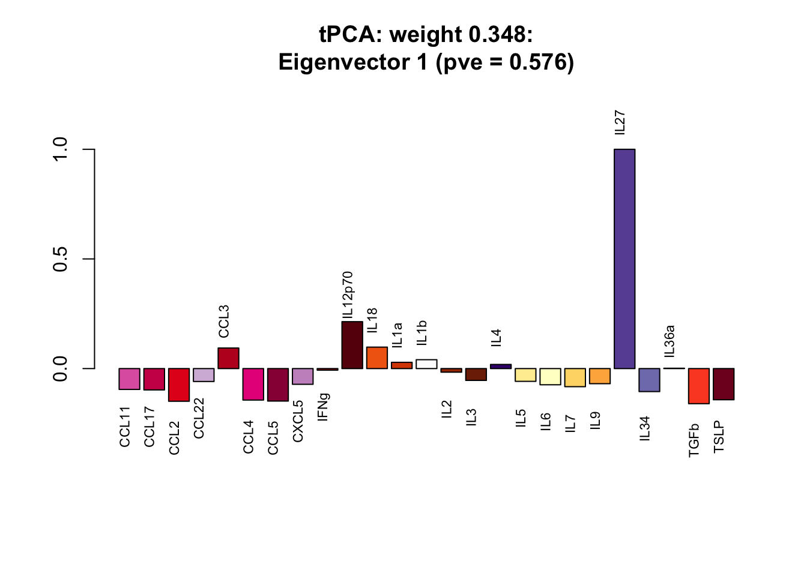
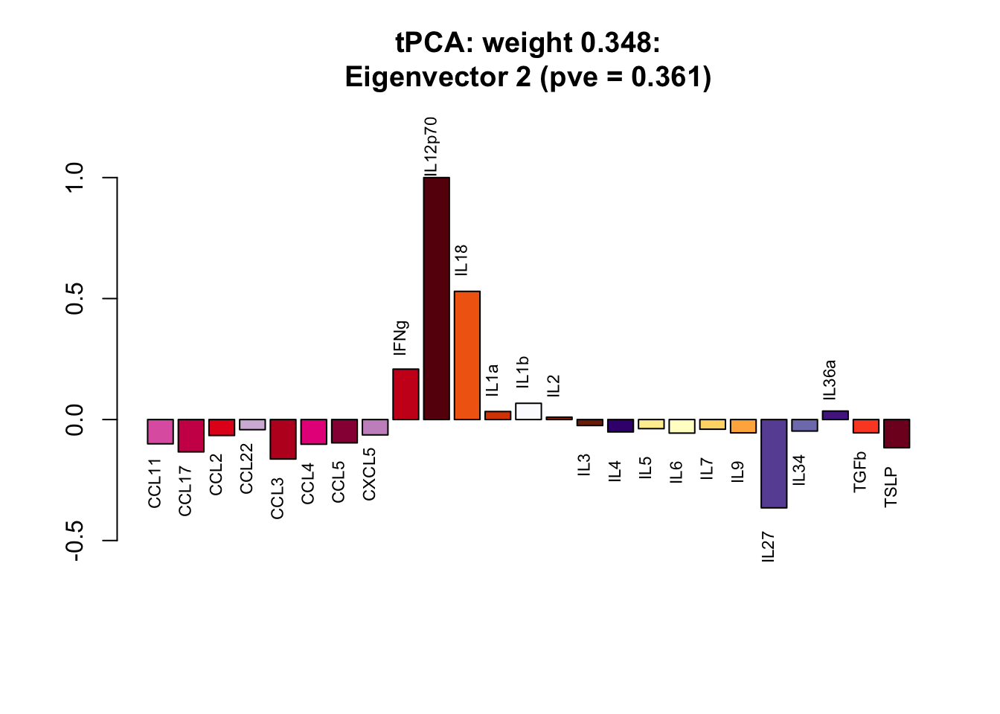

Application of poisson mash and mash to single cell cytokines data (B cells)
Yusha Liu
2020-9-16
Last updated: 2020-09-16
Checks: 7 0
Knit directory: poisson_mash/
This reproducible R Markdown analysis was created with workflowr (version 1.6.2). The Checks tab describes the reproducibility checks that were applied when the results were created. The Past versions tab lists the development history.
Great! Since the R Markdown file has been committed to the Git repository, you know the exact version of the code that produced these results.
Great job! The global environment was empty. Objects defined in the global environment can affect the analysis in your R Markdown file in unknown ways. For reproduciblity it’s best to always run the code in an empty environment.
The command set.seed(20200618) was run prior to running the code in the R Markdown file. Setting a seed ensures that any results that rely on randomness, e.g. subsampling or permutations, are reproducible.
Great job! Recording the operating system, R version, and package versions is critical for reproducibility.
Nice! There were no cached chunks for this analysis, so you can be confident that you successfully produced the results during this run.
Great job! Using relative paths to the files within your workflowr project makes it easier to run your code on other machines.
Great! You are using Git for version control. Tracking code development and connecting the code version to the results is critical for reproducibility.
The results in this page were generated with repository version 9a93286. See the Past versions tab to see a history of the changes made to the R Markdown and HTML files.
Note that you need to be careful to ensure that all relevant files for the analysis have been committed to Git prior to generating the results (you can use wflow_publish or wflow_git_commit). workflowr only checks the R Markdown file, but you know if there are other scripts or data files that it depends on. Below is the status of the Git repository when the results were generated:
Ignored files:
Ignored: .DS_Store
Ignored: .Rhistory
Ignored: code/.DS_Store
Ignored: output/.DS_Store
Untracked files:
Untracked: code/code_random_effects.R
Untracked: code/examples.R
Untracked: code/examples_updated.R
Untracked: code/util6.R
Untracked: code/util8.R
Untracked: code/util_ed.R
Untracked: code/util_random_effects.R
Untracked: code/util_random_effects_v2.R
Untracked: data/data_jr.RData
Untracked: output/B_cells/
Untracked: output/Ly6C-/
Untracked: output/ed_all_trts_maxiter1500.Rds
Untracked: output/ed_second_batch_maxiter1500.Rds
Untracked: output/ed_second_batch_v2_maxiter2000.Rds
Untracked: output/ed_v1_maxiter1000.Rds
Untracked: output/ed_v2_maxiter1000.Rds
Untracked: output/examples.pdf
Untracked: output/examples/
Untracked: output/examples_mash.pdf
Untracked: output/mash_data_limma.rds
Untracked: output/mash_data_second_batch.rds
Untracked: output/mash_fit_limma.rds
Untracked: output/mash_fit_limma_all_trts.rds
Untracked: output/mash_fit_second_batch.rds
Untracked: output/non_null_sim_setting1/
Untracked: output/non_null_sim_setting2/
Untracked: output/non_null_sim_setting3/
Untracked: output/non_null_sim_setting4/
Untracked: output/null_sim/
Untracked: output/pois_mash_contrast_posterior_all_trts.Rds
Untracked: output/pois_mash_contrast_posterior_second_batch.Rds
Untracked: output/pois_mash_contrast_posterior_second_batch_v2.Rds
Untracked: output/pois_mash_fit_all_trts.Rds
Untracked: output/pois_mash_fit_second_batch.Rds
Untracked: output/pois_mash_fit_second_batch_v2.Rds
Untracked: output/poisson_mash_fit.Rds
Untracked: output/poisson_mash_fit_contrast_posterior.Rds
Untracked: output/realdata/
Untracked: output/simulations/
Note that any generated files, e.g. HTML, png, CSS, etc., are not included in this status report because it is ok for generated content to have uncommitted changes.
These are the previous versions of the repository in which changes were made to the R Markdown (analysis/application_B_cells.Rmd) and HTML (docs/application_B_cells.html) files. If you’ve configured a remote Git repository (see ?wflow_git_remote), click on the hyperlinks in the table below to view the files as they were in that past version.
| File | Version | Author | Date | Message |
|---|---|---|---|---|
| Rmd | 9a93286 | yushaliu | 2020-09-16 | Update more application and simulation results for other cell types |
| html | fceb44f | yushaliu | 2020-09-16 | Build site. |
| Rmd | c80f953 | yushaliu | 2020-09-16 | Add more application and simulation results for other cell types |
Summary
We apply both poisson mash and mash to a subset of B cells from the cytokines data, treated by one of 25 selected conditions from the second batch. We apply both methods to the \(8,568\) genes with at least \(100\) reads across all cells, so the count data matrix \(X\) is \(8,568 \times 25\), where \(X_{jr}\) represents the total read counts of gene \(j\) in all cells from condition \(r\).
Recall the barplot and enrichment-depletion plot which display single cell-specific loadings grouped by conditions, based on topic modeling of single cell data from B cells (the number of topics \(K=12\)).
library(pheatmap)
library(gridExtra)
cols.trt <- readRDS("output/B_cells/condition_colors.Rds")
trts <- names(cols.trt)Model
We assume \(X_{jr} \sim Pois(s_r \lambda_{jr})\), and \(\log(\lambda_{jr}) = \mu_j + \beta_{jr} + \eta_{jr}\), where \(s_r\) accounts for the different sequencing depth of each condition, \(\mu_j\) is the gene-specific mean on the log scale shared by all conditions, \(\beta_{jr}\) models the condition-specific treatment effect, and \(\eta_{jr}\) models the random effect. We are mainly interested in estimation and inference on \(\beta_{jr}\). The following priors are assumed in our model: \[\begin{align} & \beta_j = \sum_{h, l} \pi_{h, l} \: MVN(0, \: w_l U_h) + \sum_{g, l} \pi_{g, l} \: MVN(0, \: w_l u_g u'_g) \\ \text{where} \quad & \sum_{h, l} \pi_{h, l} + \sum_{g, l} \pi_{g, l} = 1 \\ & \eta_j \sim MVN(0, \: \tau_j^2 I_R). \\ \end{align}\]
ED step
To estimate the data-driven prior covariances \(U_h\) and \(u_g u'_g\), we fit the poisson mash model without scaling parameters \(w_l\) to a subset of genes that are differentially expressed across conditions, which are identified based on a conditional multinomial goodness-of-fit test.
## load in the ED results
fit.ed <- readRDS("output/B_cells/ed_orig_data.Rds")
## running time per iteration in ED
fit.ed$runtime/length(fit.ed$ELBO) user system elapsed
8.599152 0.010394 8.612894 ## estimated weights for different data-driven prior covariances
names(fit.ed$pi) <- c(names(fit.ed$Ulist), names(fit.ed$ulist))
round(fit.ed$pi, 3) tPCA Emp_cov PC_1 PC_2 PC_3 PC_4 PC_5 u_0
0.583 0.001 0.167 0.084 0.100 0.036 0.006 0.021 ## look at the ELBO
plot(fit.ed$ELBO, xlab = "niter", ylab = "elbo", main="fitting ED step")
| Version | Author | Date |
|---|---|---|
| fceb44f | yushaliu | 2020-09-16 |
Estimate of data-driven covariances from ED step
par(mfrow=c(1,1))
### Estimate of eigenvectors of the data-driven covariance initialized by rank-5 PCA
eig.tPCA <- eigen(fit.ed$Ulist[[1]])
pve.tPCA <- eig.tPCA$values/sum(eig.tPCA$values)
for (k in 1:4){
v <- eig.tPCA$vectors[,k]
barplot(v/v[which.max(abs(v))], names = names(cols.trt), cex.names = 0.4,
las = 2, main = paste0(names(fit.ed$Ulist)[1], ": weight ", round(fit.ed$pi[1],3),
":\nEigenvector ", k, " (pve = ", round(pve.tPCA[k],3), ")"), col = cols.trt)
}
| Version | Author | Date |
|---|---|---|
| fceb44f | yushaliu | 2020-09-16 |

| Version | Author | Date |
|---|---|---|
| fceb44f | yushaliu | 2020-09-16 |

| Version | Author | Date |
|---|---|---|
| fceb44f | yushaliu | 2020-09-16 |

| Version | Author | Date |
|---|---|---|
| fceb44f | yushaliu | 2020-09-16 |
### Estimate of eigenvectors of rank-1 data-driven covariance matrices
for (k in 1:4){
v <- fit.ed$ulist[[k]]
barplot(v/v[which.max(abs(v))], names = names(cols.trt), cex.names = 0.4,
las = 2, main = paste0(names(fit.ed$ulist)[k], ": weight ", round(fit.ed$pi[2+k],3)), col = cols.trt)
}
| Version | Author | Date |
|---|---|---|
| fceb44f | yushaliu | 2020-09-16 |

| Version | Author | Date |
|---|---|---|
| fceb44f | yushaliu | 2020-09-16 |

| Version | Author | Date |
|---|---|---|
| fceb44f | yushaliu | 2020-09-16 |

| Version | Author | Date |
|---|---|---|
| fceb44f | yushaliu | 2020-09-16 |
Running poisson mash
We then look at the poisson mash fit to the entire dataset.
## load in the poisson mash fit results
res <- readRDS("output/B_cells/pois_mash_fit_orig_data.Rds")
res$runtime user system elapsed
13175.58 87.37 13267.73 ## look at ELBO
plot(res$ELBO, xlab = "niter", ylab = "elbo", main="Fitting poisson mash with random effects")
| Version | Author | Date |
|---|---|---|
| fceb44f | yushaliu | 2020-09-16 |
## look at distribution of random effect size (in terms of standard deviation on the log scale)
quantile(sqrt(res$tau2), seq(0.05, 0.95, 0.05)) 5% 10% 15% 20% 25% 30% 35%
0.00100000 0.00100000 0.00100000 0.00100000 0.00100000 0.00100000 0.02236068
40% 45% 50% 55% 60% 65% 70%
0.03737375 0.04485058 0.05477226 0.06324555 0.07071068 0.08134887 0.09070883
75% 80% 85% 90% 95%
0.10000000 0.12228619 0.14113440 0.17267517 0.22337263 ## look at the estimated weights of prior covariance matrices
wlist <- c(1e-3, 2.5e-3, 5e-3, 1e-2, 2e-2, 4e-2, 8e-2, 0.16, 0.32, 0.64, 1, 2, 4, 8, 16, 25, 36, 50)
pi.mat <- matrix(res$pi, ncol=length(wlist), byrow=TRUE)
rownames(pi.mat) <- c(names(fit.ed$Ulist), paste0("e_", 1:25), names(fit.ed$ulist))
colnames(pi.mat) <- paste0("w=", wlist)
round(rowSums(pi.mat),3) tPCA Emp_cov e_1 e_2 e_3 e_4 e_5 e_6 e_7 e_8
0.348 0.000 0.000 0.001 0.000 0.001 0.000 0.000 0.000 0.000
e_9 e_10 e_11 e_12 e_13 e_14 e_15 e_16 e_17 e_18
0.002 0.002 0.001 0.064 0.003 0.001 0.000 0.001 0.001 0.001
e_19 e_20 e_21 e_22 e_23 e_24 e_25 PC_1 PC_2 PC_3
0.001 0.001 0.003 0.001 0.000 0.000 0.001 0.307 0.059 0.103
PC_4 PC_5 u_0
0.056 0.005 0.038 pheatmap(pi.mat, cluster_rows=FALSE, cluster_cols=FALSE, fontsize_row=5, fontsize_col=6,
main="Estimated weights of prior covariances in poisson mash fit")
| Version | Author | Date |
|---|---|---|
| fceb44f | yushaliu | 2020-09-16 |
Comparison to fixed effects-based mash
We calculate posterior summaries of \(\delta_{jr} = \beta_{jr} - \sum_{r=1}^R \beta_{jr}/R\) from the poisson mash fit, i.e., the condition-specific deviation from the mean across all conditions, and compare to the results from fixed effects-based mash. In particular, we fit a linear fixed effects model separately to each gene \(j\), using the single-cell level normalized gene expression data as the response and the condition assignment of each cell as the predictor, to obtain \(\hat{b}_{jr}\) and \(\hat{s}_{jr}\) for each gene \(j\) and condition \(r\). When fitting this model, we assume that the Gaussian observation noise is constant over conditions for each gene \(j\). We then feed \(\hat{b}_{jr}\) and \(\hat{s}_{jr}\) to mash without common baseline.
## load in the posterior summaries from poisson mash fit
post <- readRDS("output/B_cells/pois_mash_posterior_orig_data.Rds")
## load in the mash fit
mash.fit <- readRDS("output/B_cells/mash_fit_orig_data.Rds")
## the number of significant genes identified by poisson mash
idx.pois.mash <- which(apply(post$lfsr, 1, min) < 0.05)
length(idx.pois.mash)[1] 1267## the number of significant genes identified by mash
idx.mash <- mashr::get_significant_results(mash.fit)
length(idx.mash)[1] 942## the number of genes that are identified by both
sum(names(idx.mash) %in% names(idx.pois.mash))[1] 721## the number of genes that are identified only by poisson mash
pois_mash_only <- idx.pois.mash[!names(idx.pois.mash) %in% names(idx.mash)]
length(pois_mash_only)[1] 546## the number of genes that are identified only by mash
mash_only <- idx.mash[!names(idx.mash) %in% names(idx.pois.mash)]
length(mash_only)[1] 221
sessionInfo()R version 3.6.2 (2019-12-12)
Platform: x86_64-apple-darwin15.6.0 (64-bit)
Running under: macOS Catalina 10.15.6
Matrix products: default
BLAS: /Library/Frameworks/R.framework/Versions/3.6/Resources/lib/libRblas.0.dylib
LAPACK: /Library/Frameworks/R.framework/Versions/3.6/Resources/lib/libRlapack.dylib
locale:
[1] en_US.UTF-8/en_US.UTF-8/en_US.UTF-8/C/en_US.UTF-8/en_US.UTF-8
attached base packages:
[1] stats graphics grDevices utils datasets methods base
other attached packages:
[1] gridExtra_2.3 pheatmap_1.0.12 workflowr_1.6.2
loaded via a namespace (and not attached):
[1] Rcpp_1.0.4.6 plyr_1.8.6 compiler_3.6.2 mashr_0.2.21
[5] later_1.0.0 RColorBrewer_1.1-2 git2r_0.27.1 tools_3.6.2
[9] digest_0.6.25 evaluate_0.14 lifecycle_0.2.0 gtable_0.3.0
[13] lattice_0.20-41 rlang_0.4.6 Matrix_1.2-18 yaml_2.2.1
[17] mvtnorm_1.1-0 xfun_0.13 invgamma_1.1 stringr_1.4.0
[21] knitr_1.28 fs_1.4.1 rprojroot_1.3-2 grid_3.6.2
[25] glue_1.4.1 R6_2.4.1 rmarkdown_2.1 mixsqp_0.3-43
[29] rmeta_3.0 irlba_2.3.3 ashr_2.2-50 magrittr_1.5
[33] whisker_0.4 backports_1.1.7 scales_1.1.1 promises_1.1.0
[37] htmltools_0.4.0 assertthat_0.2.1 abind_1.4-5 colorspace_1.4-1
[41] httpuv_1.5.2 stringi_1.4.6 munsell_0.5.0 truncnorm_1.0-8
[45] SQUAREM_2020.2